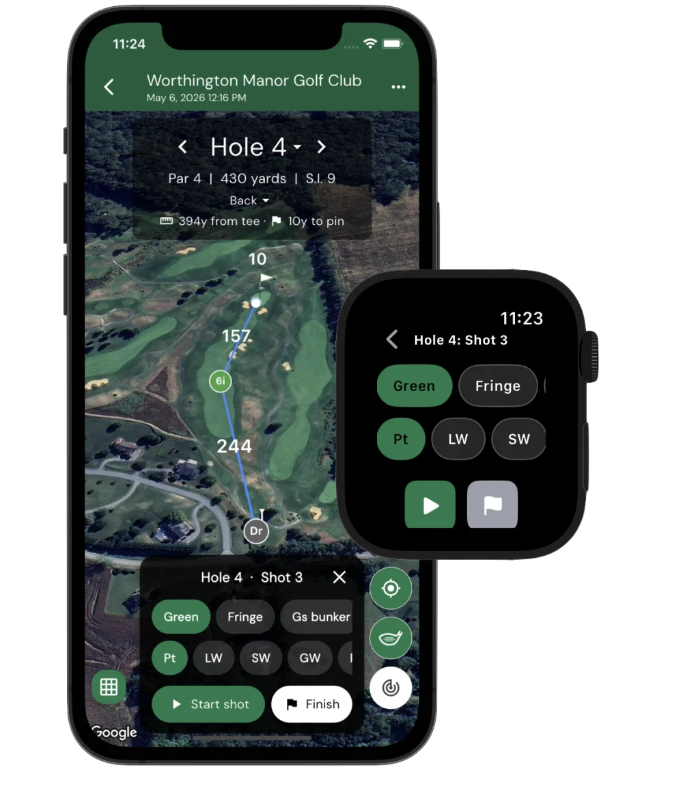
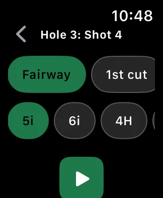
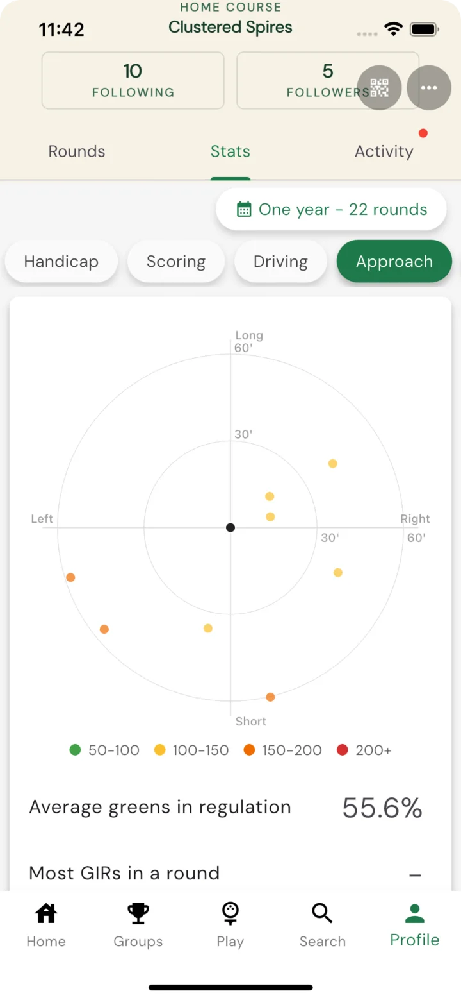
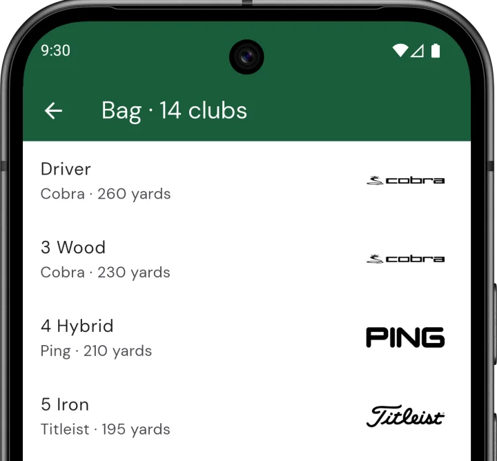
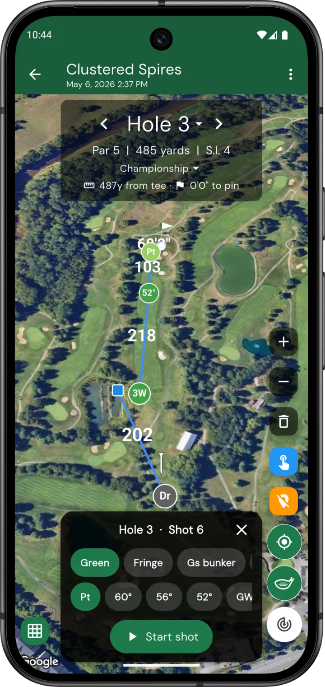

Shot tracking on your wrist
May 6, 2026
You can now track every shot of your round — club, lie, distance, where the ball ended up — entirely from your wrist. The Squabbit Apple Watch and Wear OS apps now have full shot-tracker flows that pair with the phone, plus there’s a redesigned shot tracker on the phone itself for when you’d rather tap than wear a watch.

Pick lie + club, tap Track shot
Open the watch app on your hole and you’ll see two horizontal chip rows — one for your lie (Tee, Fairway, 1st cut, Rough, Bunker, Green, etc.) and one for your club. Both rows are pre-ranked for the upcoming shot:
- Off the tee on a par 4 you’ll see Driver up front; on a par 3 the pre-pick switches to whichever iron matches your distance to the pin.
- Inside 30 yards the lie chips re-order to put Green and Fringe first, with Putter ranked at the top of the club row.
- Approach range pulls Fairway, 1st cut, and Rough to the front; long shots downplay the wedges.
Tap Track shot and the watch flips to a recording screen with a giant live yardage from where the shot started. Walk to your ball, tap Stop, and the shot is saved.

Penalty? Finish hole? Same screen.
If your shot ends up in trouble, tap Penalty on the recording screen instead of Stop. You’ll get a chip row for the penalty type (Water, Lateral, OB, Lost, Unplayable) and stroke count. Off the tee, the watch defaults to OB on par 4s/5s and Water on par 3s — matching what most amateurs hit into.
When you’re close to the cup, a small flag button appears next to Stop. Tap it to commit the in-flight shot and finish the hole in one move — no more reaching back to the phone to tap End hole.
The stats fill themselves in
Because every shot has a recorded start, end, club, and lie, Squabbit pulls a whole stack of stats out of the data without you having to log a thing:
- Fairways in Regulation and Greens in Regulation
- Up and downs — chance + conversion when you missed the green
- Sand saves when the up-and-down started from a bunker
- Driving accuracy — left / right / fairway distribution from your tee shots
- Putt miss direction backed out from the cup based on where the putt ended
- Approach proximity — average distance your approach shots end from the cup
- Shot dispersion per club, plotted on a target plot so you can see your real spread
- Per-club averages — total distance, carry-vs-roll patterns, miss tendencies
The per-hole shot polylines on the map also make it easy to spot exactly where you bled strokes — and the dispersion plots show your real-world miss patterns at a glance.

The Bag
The new Bag screen (under your profile) lets you build out the clubs you actually play. Pick a brand from the catalog (TaylorMade, Titleist, Callaway, PXG, etc.), set the model, loft, and your typical total distance, and the picker uses those to rank clubs against the remaining yardage to the pin. Custom clubs are supported — flop wedge, oddball brand, whatever — and you can leave the distance blank for clubs you don’t care to track.

Phone-only? Phone tracking too.
If you’d rather not wear a watch, the same tracker is built into the scorecard’s map view: a low-profile picker pinned to the bottom of the map, plus a Track shot pill. Tap to start a shot, walk to your ball, tap Stop. The map shows your tracked shots as colored markers (one per club, color-coded by the lie you played from) connected by polylines — so you can see at a glance how the hole played.

Re-tee, drops, and edits
Hit your drive into the water? Pick a penalty on the watch and we’ll handle the rest:
- For a stroke-and-distance penalty (OB or Lost) the picker for your next shot pre-fills with Tee + Driver, since you’re hitting again from the tee.
- For a regular drop, the next shot starts where you took the drop — so the lie chips switch to greenside or approach as appropriate.
- Two drives from the same tee render as staggered markers on the phone map so you can see both attempts.
Tap any shot marker on the phone map to nudge it, change the club, or remove it — useful when GPS jitter saves a shot 5 yards from where it really ended.
Get the watch app
The Apple Watch app installs alongside the iPhone app from the App Store; the Wear OS app is bundled with the Android app from Google Play. Open it on the watch, start tracking shots, and your hole stats fill in as you play.